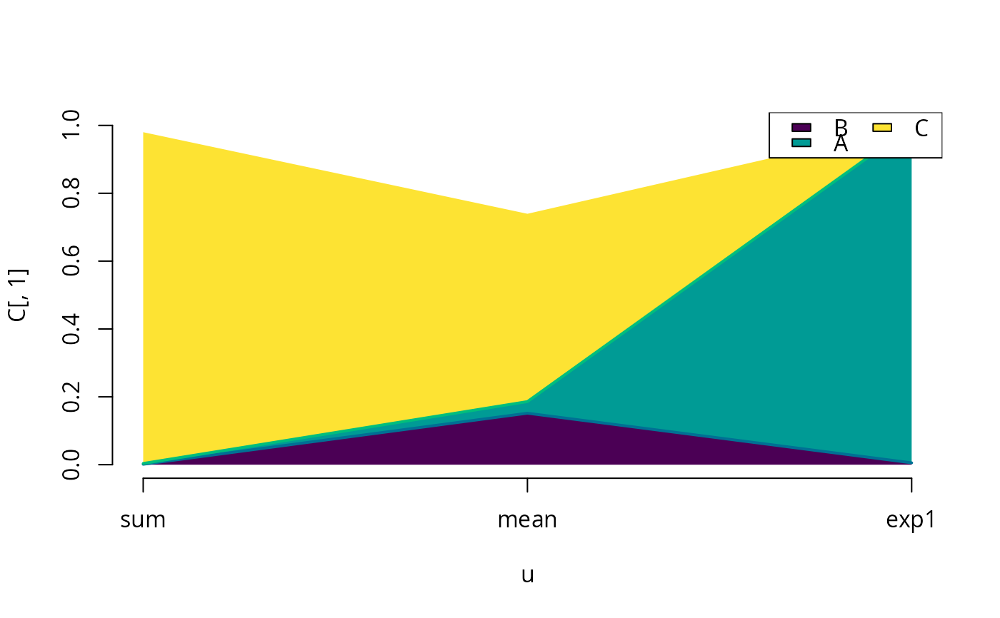

plot the sensitivity matrix
sensitivity.graph.RdProduce a cumulative shaded area plot for the sensitivity matrix. This function is intended for use with many observables, e.g. the state of the model at several given times. The x-axis of the plot is meant to be continuous. This will not produce a bar-chart, but a graph that shows how sensitivities change between farily similar observables.
Usage
sensitivity.graph(
u,
S,
color = hcl.colors(dim(S)[2]),
line.color = hcl.colors(dim(S)[2] + 1),
do.sort = TRUE,
decreasing = FALSE,
...
)Arguments
- u
the values of the x-axis for the plot, if named, the names are put at the tick-marks
- S
the sensitivity matrix as returned by
globalSensitivity(),S\[i,j\]is with respect to model outputiand parameterj- color
the list of colors to use for the shaded areas, e.g.:
rainbow(24)- line.color
the color of the lines drawn between the shaded areas
- do.sort
the parameter sensitivities are sorted according to the mean over all outputs, the parameter with the most sensitivity is plotted first, at the bottom
- decreasing
direction of sort, the first item in the sorted list (the parameter) will be plotted first, and thus at the bottom of the plot
- ...
passed on to plot
Examples
rprior <- rNormalPrior(c(-1,0,1),c(1,2,3))
X <- rprior(10000)
colnames(X) <- LETTERS[seq(3)]
Z <- exp(
cbind(
rowSums(X),
rowMeans(X),
exp(X[,1])
)
)
colnames(Z) <- c("sum","mean","exp1")
GSA <- gsa_binning(X,Z)
print(GSA)
#> A B C
#> sum 0.002387698 0.001280409 0.9763429649
#> mean 0.034222062 0.151765513 0.5535590641
#> exp1 0.992617293 0.005507580 0.0004162752
sensitivity.graph(c(sum=1,mean=2,exp1=3),GSA)

#> [1] 2